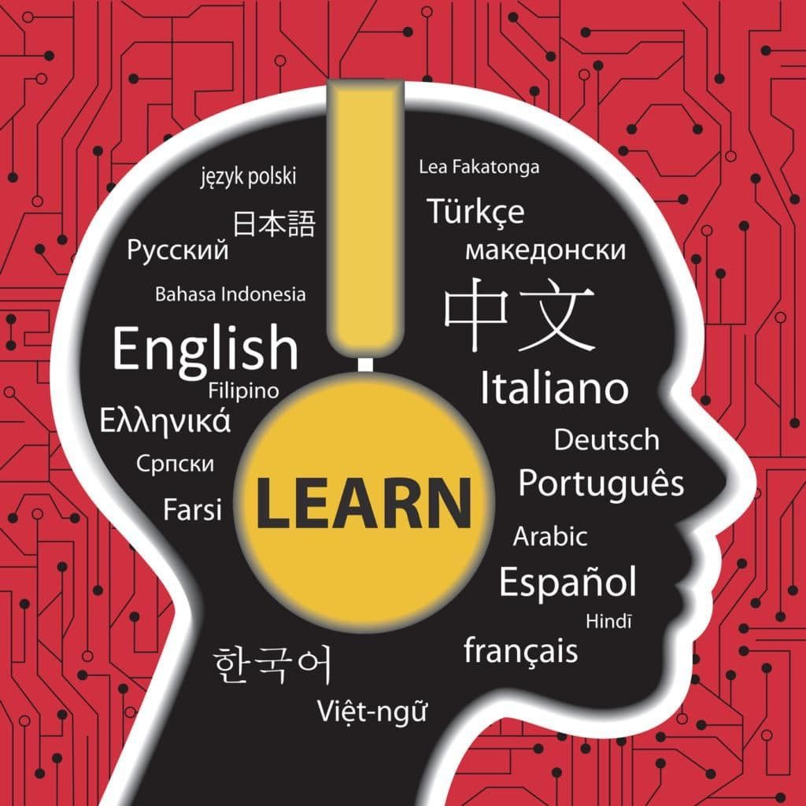

Programming
Technology is my creative language — I build ideas through code and logic, transforming concepts into reality.

Writing
Writing allows me to think, reflect, and connect philosophy and storytelling with my inner world.

Idioms & Languages
Learning languages opens doors to culture, empathy, and new ways of understanding people and ideas.